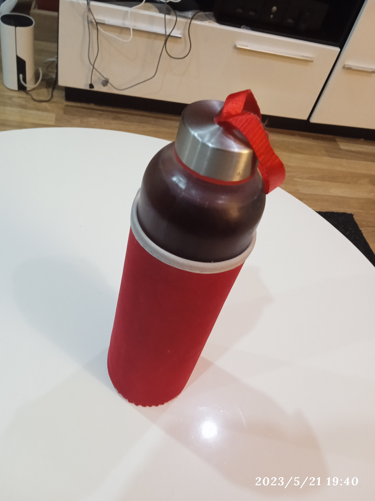

Test Image -

Output for Google Lens:
Glass Bottle
Output for MobileNet Model:
Water Bottle
Result:
Google Lens is more accurate
There were 9 objects to identify for both.Out of those 9 objects, Google Lens identified 8 objects whereas MobileNet Model only identified 3 objects